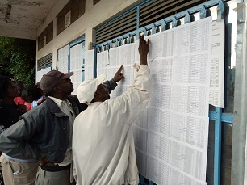

Featured
Projects
The following are the featured projects
that Hom.Samuel Arama and his CDF team have in progress and accomplished .

Work in progress...
The Lami projectThe contractor is working on various roads in Rhonda Ward, Mwariki estate improving them to bitumen standard (tarmacking);- i). Kaja Square, Pembe mbili to KK junction. ii). Pembe mbili to Eldoret stage iii). Paramount stage, Viatu to Christian Outreach junction. v). Ndimu to bakery, Molo house to Eldoret junction.

Bursary Issuance
CDF officeStudents within Nakuru West Constituency receive support through the CDF program headed by Hon.Samuel Arama ensuring access to education. Congratulations to all the boarding schools form one entrants who benefited from the NG-CDF bursary cheques..

Away in Mombasa on
official duty..Chairing the departmental committee on Transport, Public Works and Housing parliamentary committee in Mombasa; The committee has visited Port of Lamu and other government projects within the region We have to streamline and push government projects to completion to enhance service delivery and increase efficiency

St. Luke Mwariki Barut polo station
is officially open.Earlier today, the residents of Barut ward witnessed the commissioning of the security facility which they urgently needed to help enhance security in Barut area and beyond, especially along the shores of Lake Nakuru. I also handed a cheque worth 1.5 million through the NG-CDF office to fund the construction of the area chief's and assistant chief's office. I urge the police to be of assistance to wanainchi and help enforcing law and order as required. Let us pray for our country, our leaders and our families

Boda Boda empowerment
LondonCrime rates have greatly decreased within the constituency whereby many youths who had been jobless are continuously being emmpowered to do business and be in saccos to generate income for themselves.

Commissioning of the Sub-County Police
commander office (SCPC)This is an extension wing of the Kaptembwa modern police station which has been solely funded by the National Government Constituency Development funds. The objective is to enhance security in this area and also try to better services by making them available under one roof. I thank the relevant offices that helped implement the project from conception to completion. We give glory to God!

Day 2 of Development Tour in Nakuru Town West constituency.
Shabaab and KaptembwaI visited two primary schools and inspected projects like toilets, Rennovations, completion of perimeter walls, water tanks and planting of trees for environmental purposes. In Kaptembwa police station, I presented furnitures for the new police offices.


Access to Educational Facilities
EducationI invite everyone to Mama Ngina Shabab and Mwariki secondary on Tuesday, 15th Jan when I will be handing over two school buses respectively! The buses were funded by the Nakuru Town West CDF. We look forward to buying new buses to other schools within our beloved constituency!

Transformation and infrastructure
EducationAccess to quality education is one of the Sustainable Development Goals and Hon.Samuel Arama has been consistent in ensuring his electorate benefit from the intiative.
On his development tour,he visited Moi Secondary School to inspect
Construction of perimeter wall, building new classes and rehabilitation of old classrooms.

Security Boost
in Nakuru WestWe are improving every sector of Nakuru Town West. The six high mast flood lights have been placed on strategic places within Nakuru Town West. These will help curtail crime, improve business by extending business hours and eventually lift the standards of living. We hope to bring more in the near future. God bless the people of NAKURU TOWN WEST
Recent
Projects
This section showcases recent projects in,
Nakuru Town West Constituency and the way the electorate has benefited.


This is Nakuru Town West Constituency video links.
The following videos document the amazing work being done by Hon.Samuel Arama and his entire team.
Various activities within the constituency are highlighted and responses from the entire electorate on the work done.
Blog
Entries
Read current and previous blogs
-

Visit to Mwariki Secondary School
29 November 2021Hon.Samuel Arama visited Mwariki secondary school on a meeting meant to motivate students in their academic ventures. He greatly appreciated the teaching staff efforts in improving disclpine and learning standards ensuring that Mwariki is not only the best secondary school in Nakuru Town West Constitency but in the entire County and Kenya at large.
Asanti sana the parents and friends of Mwariki Secondary school and the entire fraternity. Mbele pamoja!He echoed. -

Midterm break advice to parents on schools unrest!
18 November 2021Our school children will break for mid-term as from today; parents and guardians should spend most of the time to guide and counsel their children; by so doing, we mitigate the unrest in our schools and bring up a responsible generation. It is our responsibility to "train up a child in the way he should go; even when he is old he will not depart from it." ~ Proverbs 22:6
-

Prayer Request for Boarding Schools Students
8 November 2021"When a man's ways please the Lord, He makes even his enemies to be at peace with him....." Proverbs 16:7 Let us unite and pray for our children in various boarding schools; may calm and peace prevail!

Meeting with Religious Leaders
28 October 2021Let us pray for one another in the name of the Lord... "Remember your leaders, those who spoke to you the word of God. Consider the outcome of their way of life, and imitate their faith."-Hebrews 13:7 Hon.Arama met with religious leaders and he encouraged citizens to be vigilant on thier choice of leaders.

Voter Registration
15 October 2021Umejiandikisha kama mpiga kura? Let us register as voters in the Enhanced Continuous Voter Registration exercise that is ongoing. Tujiandikishe!

Bursary Issuing
13 October 2021Good news to day school students... I will issue NG-CDF bursary cheques tomorrow, Thursday 14th Oct to Day School students who successfully applied. We are inviting Parents and guardians to attend to attend the event at the CDF office. I also wish all the students a blessed back to school; I advise them to remain calm, consistent, focused and work hard.

Church Event in Kisii
09 October 2021I was honoured to join interior Cabinet Secretary Dr. Fred Matiang'i in Nyamesocho, Nyaribari, Kisii County to several church meetings I further, condemned the unfounded impeachment motion by Nyali MP Mohamed Ali targeting CS Fred Matiangi; these are politically instigated threats with no basis. We unanimously agreed to rally behind our Gusii kingpin Dr. Fred Matiang'i.
-

Kaptembwa Police Station Listed Among the Best Stations in Kenya.
09 September 2021Today, the security committee of the National Assembly led by the chairman Hon. Paul Koinange(MP of Kiambaa constituency) agreed that architectural work will be adopted and be replicated around the country to have more of such stations. The station is modern and holistic therefore housing all the subcounty police department. I take this opportunity to thank and congratulate anyone who was involved in this mega project starting from my CDF team, public works office and all the engineers and planners. Nakuru Town West is blessed. AMINI MUNGU!Aprraised Hon.Samuel Arama
-

Bursary Application Results
09 September 2021Bursary for day scholars... Parents who recently applied for form 2, 3 and 4 day school bursary should check for the status of their application on the list pinned on the NG-CDF. We have allocated a minimum of Kshs. 6,000/= per student with special allocation to orphans and those children living with disability. "Because education is our commitment as Nakuru Town West!"
-

Thanksgiving
06 September 2018I was humbled by this act of thanksgiving! The young girl, Treser Cherotich from Kaptembwa was accompanied by her guardian to drop me a gift in my office earlier today! She reminded me how four years ago I assisted her join a national school; Karima Girls and consequently sponsored by wings to fly where she scored a mean grade of B+. She has been admitted to university under regular program to persue a degree in medicine and surgery. I wish her and other students from Nakuru Town West prosperity!
-

New High School Students
03 August 2021Congratulations to all the Nakuru Town West students who have joined FORM ONE in various national schools, extra county, county and sub county schools! It has not been easy but through commitment, moral and spiritual support we have achieved the transition process. Special thanks goes to our teachers, the parents and the ministry of education officials for being a pillar. God bless you! Good luck to our children, tunawaombea Mungu.
-
Bursary Issuing to Form One Students
29 July 2021Congratulations to all the boarding schools form one entrants who benefited from the NG-CDF bursary cheques.. Tomorrow we are issuing cheques to those joining form one in day school. Good luck..!
-

Educational Support
23 July 2021Bursary cheques for students joining FORM ONE are ready. The cheques will be issued on two different dates as follows: 1. Boarding schools; Thursday, 29th July 2021 2. Day schools; Friday, 30th July 2021 Congratulations to our children, we pray for God's favor and protection as they open a new academic chapter. Pongezi!
-

Bursary Launch
21 June 2021I gratefully thank all the parents and the guardians of the pupils transiting to form one to various secondary schools around the country. Today, I launched the form one day and boarding school bursary, I issued more than 4000 forms for both school set-up. I intend to pay 100% first term fee for the new secondary school entrants depending on the respective fee structure; and several students will be placed on full CDF scholarship.
-
Mwariki Police Station Commisioning
26 April 2021St. Luke Mwariki Barut polo station is officially open.Earlier today, the residents of Barut ward witnessed the commissioning of the security facility which they urgently needed to help enhance security in Barut area and beyond, especially along the shores of Lake Nakuru. I also handed a cheque worth 1.5 million through the NG-CDF office to fund the construction of the area chief's and assistant chief's office. I urge the police to be of assistance to wanainchi and help enforcing law and order as required. Let us pray for our country, our leaders and our families
-
Covid19 Vaccination
20 March 2021We shall overcome the Corona third wave... Today, I got the Astra Zeneca Covid-19 vaccine; I'm urging all Kenyans to ignore the rumors milling around and get vaccinated. The third wave is so severe but we can contain it by adhering to the prescribed protocols by the government. Let us normalize the use of face masks, sanitize frequently, wash our hands regularly, keep social distance and of course get vaccinated. Let us pray for our children and entire country..
-

Kapkures Ndarugo Bridge Construction
17 February 2021This is on the Kapkures Ndarugo bridge which is being expanded to enhance services within Nakuru Town West. It is the same site that we set a high mast light to improve security in the area. We are also constructing storey building; offices for the Deputy county commissioner and other government departments to make Nakuru West complete and independent with all government facilities. Kapkures will be the sub county headquarters! We Trust in God!
Contact
Nakuru Town West Constituency
Do you have any concern or feedback
kindly leave us your message here and we shall get back to you.